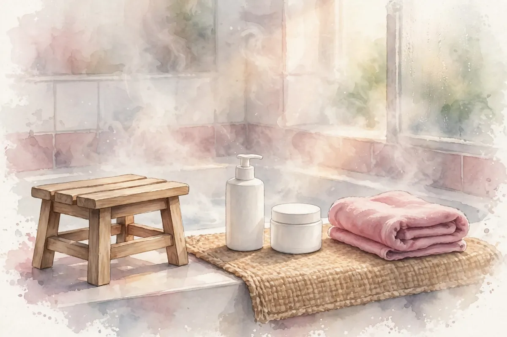

入浴後の塗るタイミングと順番

ボディクリームを塗る定番のタイミングは、入浴後です。ただ、「お風呂上がりのいつ」「どの順番で」が決まっていないと、つい後回しになってしまいます。施術の現場でも、塗布の順番は手順として決められています。この記事では、タイミングと順番の決め方を整理します。
拭く「前」か「後」かで、伸び方が変わる
身体に水分が残った状態で塗ると、クリームは薄く広がりやすくなります。逆に、しっかり拭いてから塗ると、量の感覚がつかみやすくなります。どちらが正解という話ではなく、質感との相性です。軽い質感のものは拭いた後、重い質感のものは水分が少し残る状態、といった具合に、自分のアイテムで試して決めるのが確実です。
大切なのは、入浴後の流れの中で「塗る時間」を先に確保することです。着替えてしまうと塗りにくくなる部位もあるため、順番は着替えより前が基本になります。
順番は「忘れやすい部位」から
順番の決め方として私が勧めるのは、忘れやすい部位から塗ることです。背中、ふくらはぎの裏側、足の甲など、後回しにすると忘れる部位を先に済ませます。その後、腕、脚の前面、お腹といった大きな面を塗ると、流れが安定します。
施術では、部位の順番を決めておくことで、塗り残しと時間のばらつきが減ります。自宅のケアでも同じで、順番が決まっていると、考えなくても手が動くようになります。
流れを決めると、続けやすい
入浴後の流れは、「湯上がり→拭く→塗る→着替える」という一連の手順として設計するのがおすすめです。クリームの置き場所も、脱衣所の中にしておくと流れが途切れません。浴室から出たあとの動線の上にアイテムがあるかどうかで、続けやすさは大きく変わります。
タイミングと順番は、アイテムの性能と同じくらい大切な要素です。今の流れを見直すだけでも、毎日のケアの質は変わってきます。
時間のない日は、順番を短縮する日があっても構いません。お子さんと一緒に入浴する日、帰宅が遅い日など、生活には波があります。そういう日は「今日は脚と腕だけ」というように、範囲を絞った短縮版の手順を用意しておくと、ゼロの日を作らずに済みます。完璧な手順を毎日続けることより、短縮版も含めて流れを絶やさないことの方が、長い目で見てケアの習慣を守ります。順番表を作る方は、通常版と短縮版の2つを書いておくのがおすすめです。
家族と一緒に暮らしている方は、脱衣所の動線が重なる時間帯もあると思います。その場合は、自分の塗る時間を少しずらす、アイテムを洗面所側にも分けて置くなど、場所と時間の両方で流れを設計すると、順番が守りやすくなります。
セラフィナ「順番を決めておくと、塗り忘れが減って、流れもスムーズだね」